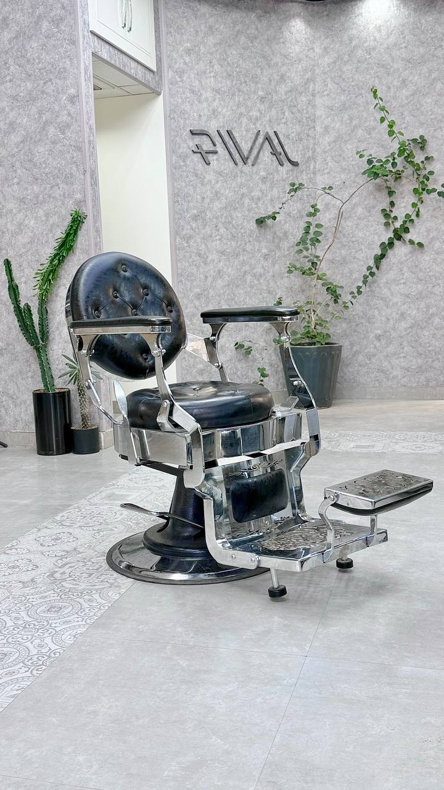

rv-glass
شیشه شفاف
کارت، فهرست، تقویم. پشتش دیده میشود و متن همیشه خواناست.
rv-glass-strong
شیشه پررنگ
برگه، دیالوگ، منو، نوار پایین — روی عکس.
سالن ریوال
اردبیل
متن روی عکس فقط روی صفحه دودی
اطلاع وضعیت شیشهای نیست
پیامها تکرنگ و تختاند: زمینه و لبه همتن، آیکون همرنگ وضعیت.
دستور ماده
پرکننده
glass-fill 56%
strong 78%
تاری
blur 22 / 36 + saturate 180%
لبه
1px glass-edge + glass-shade
سایه
shadow-glass (ink only)
زمینه
یک گرادیان نرم برای همه صفحهها
سفید جامد
فیلد، زمان، روز تقویم — جایی که تایپ یا لمس مکرر است.